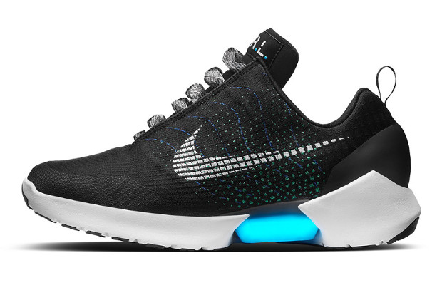
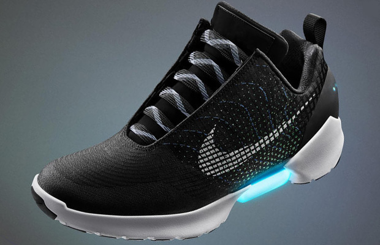
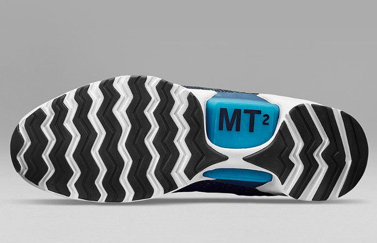
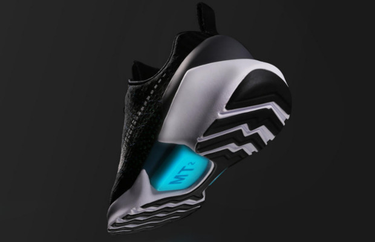
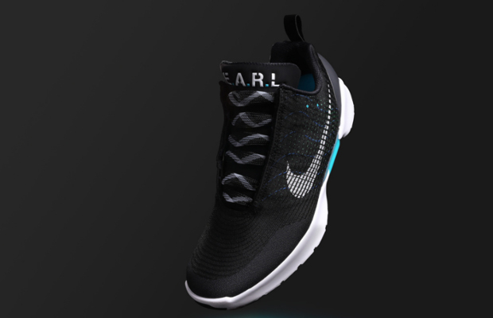
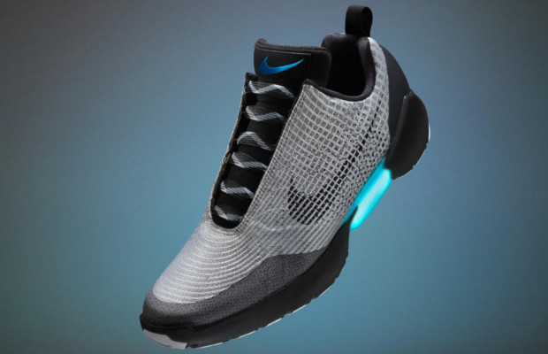
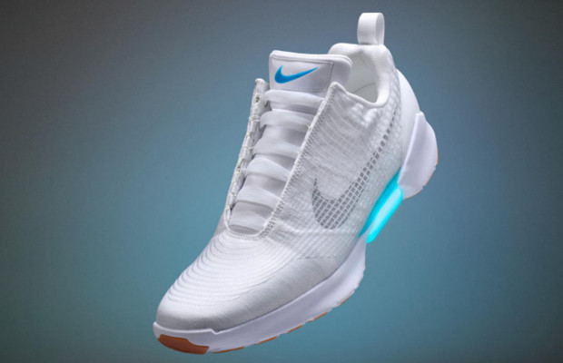

Nike HyperAdapt 1.0
Welcome to the future of footwear. The Nike HyperAdapt 1.0 is the first fully-functioning athletic shoe that electronically adjusts to the contours of your foot via adaptive lacing technology – providing a personal, customized fit that makes it feel like an extension of your body.







Auto-Unlace
Slide your foot in and let the laces tighten themselves. No more wasted time on tying your shoes.
Battery Indicator
Every button press triggers a light animation followed by a color flash corresponding to the battery level.
Adjust Comfort Preset
Set your own personal comfort level for the laces to adjust to when lacing.
Forget Bending Over
Control every aspect of your shoe with the Nike HyperAdapt app from your phone.
Charge Up!
Charge your shoes with the built in charging-port with Nike fast-charge technology.
Wow another feature
This is where I would put another feature if I could think of one.

This shoe has saved my life ten times over.
Before I would have to actually have to spend at least 7 seconds tying my shoe.
Now that I have switched to these shoes, my daily 7 seconds are no longer going to take away time from my busy schedule.
~ Tammy Toothson
I never had the chance to learn how to tie my shoes growing up.
Getting the real deal from the movies; we in the future now.
I don't ever have to learn how to tie my shoes thanks to the HyperAdapts.
~ The Movie Man